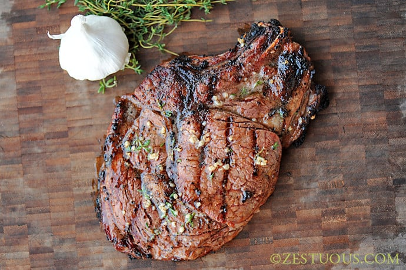

Ribeye Steak

Description
Steak is very easy to overcook. Fortunately, it's also very easy to make juicy and delicious.
Whether you're cooking for a romantic date or you just need to wet your whistle with some gristle,
this ribeye recipe will get you exactly what you need.
Ingredients
- 1 Ribeye Steak
- Salt and Pepper
- Butter
Steps
- Let your steak rest unrefrigerated for 15 to 20 minutes
- Generously add salt and pepper to both sides of your steak
- On a hot grill, lay steaks horizontally on one side. Grill for 90 seconds
- Turn steak vertically and grill for 90 seconds
- Flip steak to other side and grill for 90 seconds
- Turn steak horizonally and grill for 90 seconds
- Remove steak from heat, lightly butter the top and let it rest for 5 - 10 minutes
Return Home